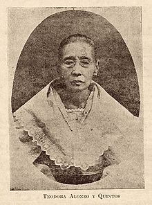

The First Teacher
Jose Rizal’s first teacher was his mother, who had taught him how to read and pray and who had encouraged him to write poetry. He learned the alphabet by the age of 3. Then by the age of 5, he learned to write and read the Spanish Bible. At the age of 8, he composed a drama called “Sa Aking mga Kabata”.
Private Tutors
Later, private tutors from Calamba Laguna Maestro Celestino, Maestro Lucas Padua, and Leon Monroy, taught the young Rizal Spanish and Latin.
In June 1899 at Binan Laguna when Leon Monroy died, Rizal was given a new private tutor named Maestro Justiniano Aquino Cruz.
Rizal Enters the Ateneo
Jose, at 11 years old, accompanied by Paciano, went to Manila to take the entrance examinationson Christian Doctrine,arithmetic, and reading at the College of San Juan de Letran, and passed them. His father was the first one who wished him to study at Letran but he changed his mind and decided to send Jose at Ateneo instead.
Although the college registrar of Ateneo Municipal, Father Magin Ferrando, refused to admit Jose because he was late for registration and he was sickly and undersized for his age (11 yrs old). But with the aid of Manuel Xeres Burgos, nephew of Father Burgos, he was admitted at Ateneo. Jose adopted the surname 'Rizal' at the Ateneo because their family name 'Mercado' had come under suspicion of the Spanish authorities.
At June 10, 1872, Rizal entered the Ateneo Municipal de Manila(1872-1877) a college under the supervision of the Spanish Jesuits. He earned excellent marks in subjects like philosophy, physics, chemistry, and natural history. At this school, he read novels; wrote prize-winning poetry (and even a melodrama—"Junto al Pasig"); and practiced drawing, painting, and clay modeling, all of which remained lifelong interests for him.
Rizal eventually earned a land surveyor’s and assessor’s degree from the Ateneo Municipal while taking up Philosophy and Letters at the University of Santo Tomas.
During 1876, his fifth year in Ateneo, this is where he also wrote his two poems called "Por la Educacion Recibe Lustre la Patria" and "Alianza Intima Entre La Religion Y La Educacion".
Years in Ateneo
| School Year | Activities | Achievements | Awards |
|---|---|---|---|
| First Year (1872-1873) | Took private lessons in Isabel College during noon recesses to improve his Spanish language paying three pesos for those extra lessons. | Brightest pupil in the whole class even though he was placed at the bottom of the class for being a newcomer. | Placed second at the end of the year. Awarded a religious prize. |
| Second Year (1873-1874) | Lost the class leadership, but he repented and even studied harder. | Because of his correct interpretation of his mother's dream, that she will someday be free, his prophecy that someday Spain would lose the Philippines and that America would come to succeed her also became true. | Received excellent grades in all subjects and a was awarded a gold medal. |
| Third Year (1875-1876) | One of his professor, inspired him to study harder and write poetry. | He became an Interno in Ateneo. | Returned to Calamba with 5 medals and excellent ratings. |
| Fourth Year (1876-1877) | Early morning on the day of his graduation, he prayed to the Virgin to ‘commend his life and protect him as he step into the world´. | The most brilliant Atenean of his time, and was truly ‘the pride of the Jesuits´. | Received from his Alma Mater, Ateneo Municipal, the degreeof Bachelor of Arts, with highest honors. |
Jesuits System of Education
The Jesuitical system of instruction was considered more advanced than that of other colleges in that epoch. Its discipline was rigid and its methods less mechanical. It introduced physical culture as part of its program as well as the cultivation of the arts, such as music, drawing, and painting.
For this reason, Jose Rizal regarded the Jesuits as “model of uprightness, earnestness, and love” for the advancement of the students.
Studies in University of Sto. Thomas
After graduation with the highest position in Ateneo, in 1877, at the age of 16, Rizal entered the halls of UST (1877-1882) to pursue a bachelor's degree in Philosophy and Letters. His enrollment marked the beginning of a transformative period in his life.
It was during the school term (1978-1979) that Rizal took up medicine, enrolling simultaneously in preparatory medical course and the regular first year medical course.
The reason why he studied medicine were; he wanted to be a physician so that he may cure his mother's failing eyesight and the Father Recto of the University, whom he consulted for a choice of career, finally answered his letter, and recommended medicine.
Education in Europe
Jose Rizal wasn't satisfied of his education, so he went to Europe, suggested by Paciano. Jose Rizal went to Spain and studied in Medicine and philosophy and Letters at the Universidad Central de Madrid on May 3, 1882.
Dr. Jose Rizal obtained the degree of Licentiate in Medicine at the age of 23 on June 1884.
Rizal's UST education played a pivotal role in the formation of La Liga Filipina in 1892, an organization aimed at advocating for political and social reforms peacefully.
Arrival in Germany
Rizal arrived in Heidelberg, Germany on February 3, 1886. He attended the lectures of Dr. Otto Becker and professor Wilhelm Kuehne at the University of Heidelberg. He also worked at the University Eye Hospital under the guidance of Dr. Becker. Under the direction of this renowned German ophthalmologist, Rizal had learned to use the ten newly invented ophthalmoscope (invented by Hermann von Helmhottz), which he later used to operate on his mother's eye. ln Heidelberg, the 25-year-old Rizal completed his eye specialization.
ln August 1886, he attended lectures on history and Psychology at the University of Leipzig. In November 1886, he reached Berlin, the famous city where he worked as an assistant in Dr. Schweigger’s clinic and attended lectures at the University of Berlin.
Dr. Rizal was inducted as a member of the Berlin's “Ethnological Society", "Anthropological Society", and “Geographical Society”
Rizal spent three months in the nearby village, Wilhemsfeld, where he wrote the last few chapters of Noli Me Tangere.
Extra Curriculars
- Classroom Emperor
- Campus Leader
- Secretary of Marian Congregation Religious Society
- Member of Academy of Spanish Literature and the Academy of Natural Sciences
- Studied painting under the famous Spanish Painter, Agustin Saez
- Improved his sculpture talents under the supervision of Romualdo de Jesus
- Engaged in gymnastics and fencing and continued the physical training under his sports-minded Tio Manuel